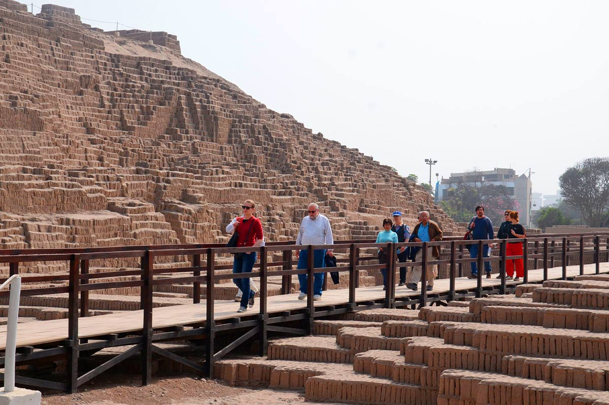
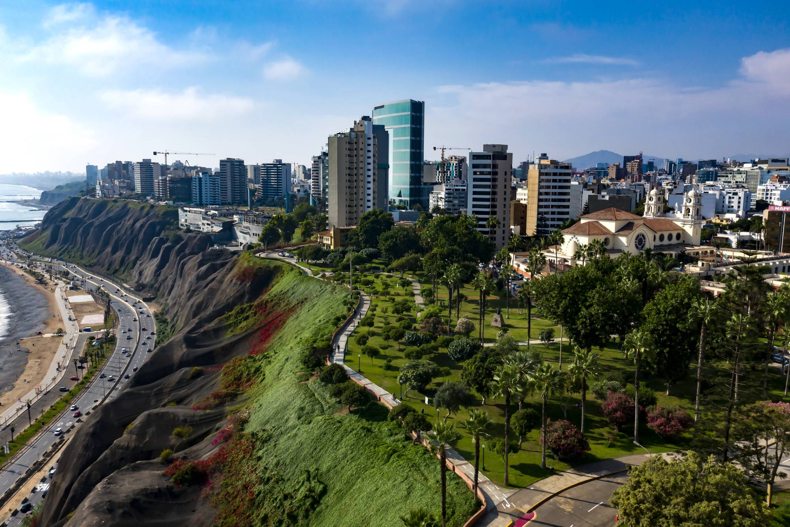
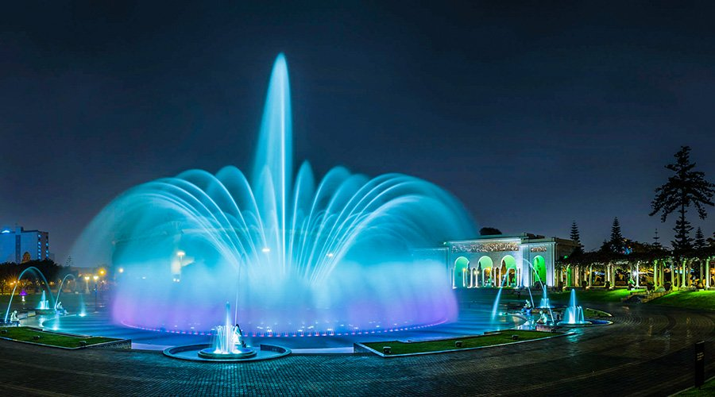

Bienvenidos a la Ciudad de los Reyes
Lima reúne historia prehispánica, arquitectura virreinal, vida urbana y una reconocida tradición culinaria. Su Centro Histórico conserva plazas, iglesias y casonas que recuerdan el papel de la ciudad como capital del Virreinato del Perú. La Plaza Mayor es un buen punto de partida para recorrer sus calles y conocer su patrimonio.
Desde el Centro Histórico, el Jirón de la Unión atraviesa antiguas cuadras comerciales y conecta lugares emblemáticos como la Plaza Mayor y la Plaza San Martín. Hoy invita a caminar entre edificios históricos, comercios y espacios culturales, y a descubrir cómo la ciudad conserva su pasado mientras sigue transformándose.
Puntos de interés en Lima

Plaza Mayor de Lima
Un punto emblemático del Centro Histórico, rodeado de edificios que narran etapas importantes de la historia limeña.
- Está en el corazón del Centro Histórico y es un buen punto de inicio para recorrer el damero fundacional.
- En sus alrededores encontrarás la Catedral, el Palacio de Gobierno y el Palacio Municipal; revisa el acceso vigente de cada edificio.
- Continúa a pie por el Jirón de la Unión hasta la Plaza San Martín para conocer más arquitectura histórica.
- Usa calzado cómodo, lleva agua y considera el sol del mediodía al planificar el recorrido.
- Respeta las zonas señalizadas y mantén tus pertenencias seguras en lugares concurridos.
- Reserva tiempo adicional para visitar iglesias, museos y espacios culturales cercanos.

Huaca Pucllana
Un importante centro ceremonial prehispánico de la cultura Lima, ubicado en el distrito de Miraflores.
- La zona arqueológica fue un importante centro ceremonial y administrativo de la cultura Lima.
- El recorrido guiado ayuda a comprender sus plazas, rampas y la construcción con adobitos colocados verticalmente.
- Confirma horarios, tarifas y disponibilidad directamente con el sitio antes de salir.
- Considera tiempo adicional para visitar el museo de sitio y sus espacios interpretativos.
- Permanece en los caminos habilitados para proteger las estructuras arqueológicas.
- La huaca está en Miraflores; consulta opciones de transporte y estacionamiento con anticipación.

Malecón de Miraflores
Parques y miradores junto al océano Pacífico ofrecen espacios para caminar, montar bicicleta y disfrutar del paisaje costero.
- Puedes recorrer distintos parques costeros, con paradas conocidas como el Parque del Amor y el Faro de la Marina.
- Las rutas peatonales y ciclovías conectan varios miradores; mantente en los espacios señalizados.
- En días despejados, los acantilados ofrecen vistas amplias del océano Pacífico.
- Lleva una prenda ligera: la brisa marina y la garúa pueden sentirse incluso en días templados.
- Las actividades de parapente dependen del clima y deben coordinarse con operadores autorizados.
- Evita acercarte al borde de los acantilados y sigue las indicaciones de seguridad del parque.

Circuito Mágico del Agua
Un conjunto de fuentes ornamentales en el Parque de la Reserva, conocido por sus juegos de agua y luces.
- El parque reúne fuentes ornamentales y un espectáculo nocturno de luces, agua y música.
- Confirma los horarios, tarifas y días de funcionamiento en los canales oficiales antes de tu visita.
- Llega con tiempo para recorrer las fuentes y ubicar el acceso al espectáculo principal.
- Usa calzado cómodo y protege tus dispositivos si planeas acercarte a las fuentes interactivas.
- Sigue las instrucciones del personal y respeta las áreas restringidas.
- Planifica tu transporte de regreso, especialmente si visitas el parque por la noche.